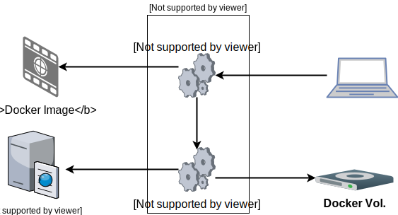

What do we want to learn?

- How to use Docker Networks
- How to use the Docker Registry
- How to connect Docker Containers in a network
- How to Backup/Restore a Docker Container
The example
- The application is a simple todo application
- The todo application needs these env vars:
- DB_USER, DB_PASSWORD
- DB_URL=jdbc:mysql://host:port/db
- The host running the Docker Container must have internet access
- The MariaDb Docker Image: https://hub.docker.com/_/mariadb/
- The database needs to be accessible when the todo application starts
Preparations
- Create the directorycomplex-examplefor the sources
- Copy theapp.jarto that directory
- Create a file namedcommands.shand add all your commands there
- Create a file namedDockerfilefor defining the todo-app environment
The Application Docker Image
FROM library/java:8-alpine
MAINTAINER ...
LABEL ...
RUN ...
COPY ...
CMD ["java", "-jar", "/work/app.jar", "java.net.preferIPv4Stack=true", "-Dswarm.bind.address=0.0.0.0"]
Solution
FROM java:openjdk-8-jdk-alpine
MAINTAINER <thomas.herzog@gepardec.com>
LABEL name="ToDo application" \
create="docker container create --name <container-name> --publish <exposed-port>:8080 \
--env DB_USER=<db-user> --env DB_PASSWORD=<db-pwd> \
--env DB_URL=<db-url> --network <network-name> <image-name>" \
start="docker container start <container-name>"
RUN mkdir /work
COPY app.jar /work/app.jar
CMD ["java", "-jar", "/work/app.jar", "java.net.preferIPv4Stack=true","-Dswarm.bind.address=0.0.0.0"]
docker image build -t todo-app:latest .
The Docker Network
# Create the Docker Network
docker network ...
- Create the Docker Network todo-net
- This is the network for the database and todo application
Solution
docker network create todo-net
Provision Docker Containers
# 1. Create the Docker Containers
docker container ...
# 2. Start the Docker Containers
docker container ...
- Create the Docker Containers todo-app, todo-db
- Start the Docker Containers todo-db, todo-app
- Access the application via http://localhost:8080
- Create some todo entries
Solution
# 1. Create the Docker Containers
# 1.1 For todo-app
docker container create \
--name todo-app \
--env "DB_URL=jdbc:mysql://todo-db:3306/todo" \
--env "DB_USER=todo" \
--env "DB_PASSWORD=todo" \
--publish 8080:8080 \
--network todo-net \
todo-app:latest
# 1.2 For todo-db
docker container create \
--name todo-db \
--volume todo-db-vol:/var/lib/mysql \
--env "MYSQL_ROOT_PASSWORD=todo" \
--env "MYSQL_DATABASE=todo" \
--env "MYSQL_USER=todo" \
--env "MYSQL_PASSWORD=todo" \
--network todo-net \
library/mariadb:latest
# 2. Start the Docker Containers
docker container start todo-db
sleep 5s
docker container start todo-app
Some questions?
- What happens if we don't add the todo-app Docker Container to the Docker Network?
- What happens if we don't publish the port of the todo-app?
- What happens if we misconfigure one of the environment variables?
Solution
- todo-app can't connect to the database,
because todo-app is not in the network
- We can't access the todo-app web view,
because the port 8080 is not published
- todo-app can't start or access the database,
because parameters are missing or faulty?
Backup the database
# 1. Stop the Docker Containers
docker container ...
# 2. Backup the database
docker run ...
# 3. Start the Docker Containers
docker container ...
- Stop the Docker Containers
- Run a backup Docker Container
- Start the Docker Containers
Solution
# 1. Stop the Docker Containers
docker container stop todo-app todo-db
# 2. Backup the database
docker run --rm \
--volumes-from todo-db \
--volume $(pwd):/backup \
alpine tar cvf /backup/backup.tar -C /var/lib/mysql .
# Start the Docker Containers
docker container start todo-db
sleep 5s
docker container start todo-app
Restore the database
# 1. Stop the Docker Containers
docker container ...
# 2. Restore the database
docker run ...
# 3. Start the Docker Containers
docker container ...
- Stop the Docker Containers
- Run a restore Docker Container
- Start the Docker Containers
Solution
# 1. Stop the Docker Containers
docker container stop todo-app todo-db
# 2. Perform the restore
docker run --rm \
--volumes-from todo-db \
--volume $(pwd):/restore \
alpine sh -c "rm -rf /var/lib/mysql/* \
&& tar xvf /restore/backup.tar -C /var/lib/mysql --strip 1"
# 3. Start the Docker Containers
docker container start todo-db
sleep 5s
docker container start todo-app
Cleanup
# 1. Delete Delete the Docker Containers
docker container ...
# 2. Delete the Docker Image
docker image ...
# 3. Delete the Docker Network
docker network ...
# 3. Delete the Volume
docker volume ...
Solution
# 1. Delete the Docker Containers
docker container rm -f todo-app todo-db
# 2. Delete the Docker Image
docker image rm todo-app
# 3. Delete the Docker Network
docker network rm todo-net
# 4. Delete the Docker Volume
docker volume rm todo-db-vol